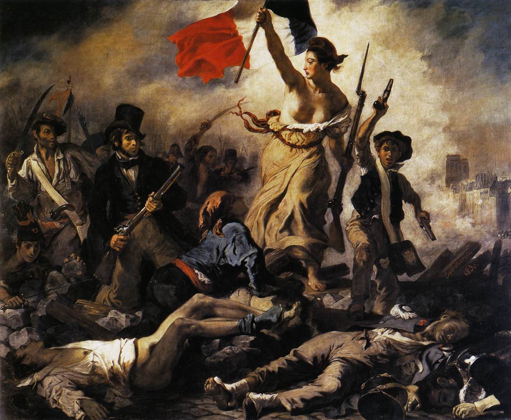
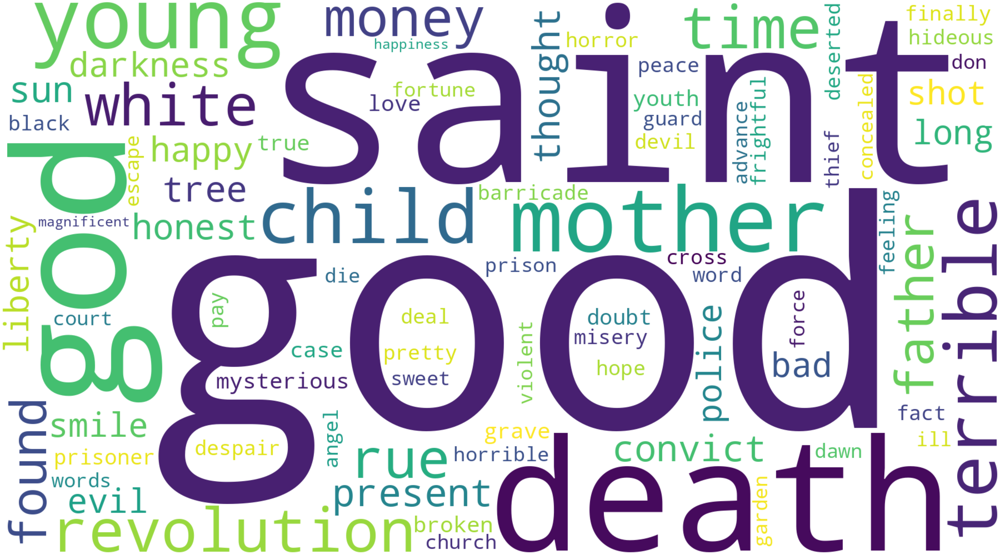

Engineering & Operations
Technical experience in complex and high-responsibility environments.
Data Analyst
Turning complex data into structured, meaningful insights.
Data Analyst with a background in Marine Engineering, currently completing intensive training in Data Analytics at Le Wagon. I combine analytical thinking, technical experience and data tools to explore patterns, structure information and communicate insights clearly.
About
My professional background was built in technical, operational and high-responsibility environments, including Marine Engineering, the Brazilian Navy and the Oil & Gas industry.
That experience strengthened my analytical reasoning, organization, communication, teamwork and systematic problem-solving.
Today, I apply that foundation to Data Analytics, working with Python, SQL, data visualization, data modeling and analytical workflows.
I am currently completing the Data Analytics program at Le Wagon and developing hands-on projects using structured and real-world datasets.
Key Pillars
Technical experience in complex and high-responsibility environments.
Python, SQL, BI, visualization, modeling and machine learning.
Leadership, communication, coordination and adaptability.
Featured Project
Literary Data Analysis
From literature to structured data.
A curated dataset based on Victor Hugo's Les Misérables, created to transform unstructured literary text into organized, analysis-ready data.
The project structures information on characters, chapters, locations and historical events, supporting computational analysis and data visualization.
Project currently in development.


STATISTICAL DATA ANALYSIS
A statistical analysis of Olist ecommerce data exploring how shipping performance relates to customer satisfaction.
The project combines descriptive analysis, correlation analysis and hypothesis testing to compare customer ratings across delivery performance and identify actionable business insights.
Technical Skills
Python
R
SQL
Google Sheets
Excel
Power BI
Looker Studio
Plotly
Matplotlib
BigQuery
dbt
GA4
Machine Learning
APIs
Git
GitHub
VS Code
Insomnia
Background
2026 — Present
Le Wagon / Independent Projects
Developing hands-on projects using Python, SQL, Machine Learning and data visualization, while strengthening analytical and technical skills.
2021 — 2026
Tidewater / Sapura / Bram Offshore
Operated and monitored complex marine engineering systems in offshore environments, analyzing operational parameters and coordinating work within multidisciplinary teams.
2020 — 2021
Transpetro — Petrobras Transporte S.A.
Supported engine-room operations, equipment monitoring and preventive maintenance aboard oil and LPG tankers.
2016 — 2018
Officer / Military Training
Developed discipline, accountability, adaptability and teamwork in a structured, demanding environment.
2026
Le Wagon — Batch #2295
2026
Google / Coursera
2016 — 2018
EFOMM — CIAGA
Languages
Portuguese — Native
English — Fluent